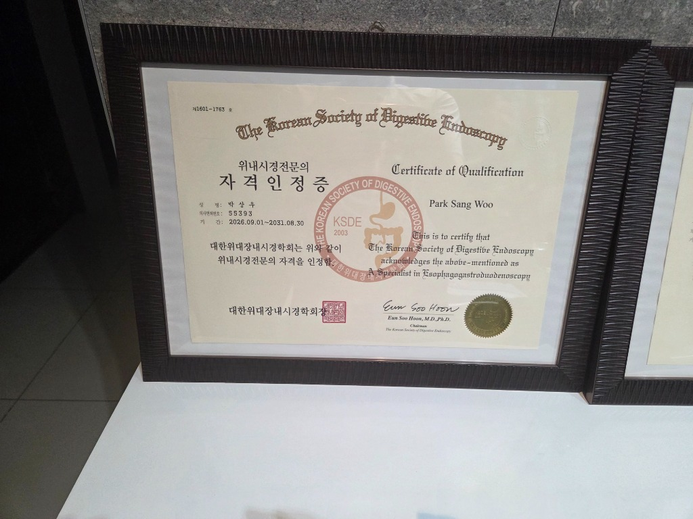

대한위대장내시경학회 인증 위내시경전문의가 직접 검사하는 계양구 계산역 상우내과의원
위암은 한국인에게 여전히 높은 발병률을 보이는 대표적인 소화기 암이지만, 점막층에 국한된 조기 위암 단계에서 발견하여 치료하면 5년 생존율이 95% 이상에 달합니다. 하지만 편평하거나 미세한 점막 변화로 시작되는 조기 병변은 의료진의 임상적 숙련도와 내시경 장비의 해상도에 따라 진단율이 크게 좌우됩니다. 인천 계양구 계산역 4번 출구 앞 상우내과의원은 대한위대장내시경학회(KSDE) 공식 인증 '위내시경전문의'가 상주하여 직접 정밀 검사를 시행합니다.

▲ 대한위대장내시경학회(KSDE) 인증 위내시경전문의 자격인정증 (인증기간: 2026.09.01 ~ 2031.08.30)
1. 대한위대장내시경학회 '위내시경전문의' 자격의 가치
대한위대장내시경학회(The Korean Society of Digestive Endoscopy)는 국내 소화기 내시경 분야에서 가장 엄격한 학술적 기준을 제시하는 공인 학회입니다.
학회 인증 '위내시경전문의'는 수많은 임상 증례(수천 례 이상의 내시경 검진 및 치료 시술)를 성공적으로 완수하고, 병변 판독 능력, 긴급 출혈 지혈술, 진정 약물 관리, 소독 감염 관리 전반에 걸친 까다로운 자격 심사를 통과한 의사에게만 수여됩니다. 5년 주기의 재인증 제도를 통해 지속적인 연수 교육과 임상 질 관리가 보장됩니다.
💡 조기 위암 진단의 핵심 관건:
진행성 위암은 육안으로도 쉽게 궤양이나 종괴를 확인할 수 있으나, 점막에만 살짝 색조 변화나 미세 요철로 나타나는 **'조기 위암(Early Gastric Cancer)'**은 숙련된 전문의의 꼼꼼한 관찰력이 없으면 단순 만성 위염으로 오진하고 지나치기 쉽습니다. 따라서 풍부한 증례를 경험한 전문의에게 검사를 받는 것이 결정적입니다.
2. 상우내과의원 소화기내시경센터의 4대 진료 원칙
상우내과의원은 환자분들께서 안심하고 편안하게 검사를 받으실 수 있도록 표준화된 선진 내시경 진료 프로세스를 고수합니다.
| 구분 항목 | 상우내과의원 시스템 | 환자 안전 및 진단 혜택 |
|---|---|---|
| 검사 집도의 | 학회 인증 위내시경전문의 직접 전담 시행 | 식도부터 위, 십이지장 구부 및 하행부까지 사각지대 없는 꼼꼼한 전벽 관찰 |
| 내시경 장비 | OLYMPUS EVIS EXERA III (CV-190) 고화질 | NBI(협대역 화상 강화) 기술로 미세 혈관망 및 전암성 병변(장상피화생) 정밀 감별 |
| 수면 안전 관리 | 의식하 진정내시경 풀 모니터링 시스템 | 검사 중 실시간 산소포화도(SpO2), 맥박, 혈압 감시 및 응급 역전제 상시 구비 |
| 원스톱 헬리코박터 케어 | 신속요소분해효소(CLO) 조직검사 즉시 연계 | 위궤양, 위축성위염 유발 인자인 헬리코박터균 확인 및 맞춤 1·2차 제균 치료 처방 |
3. OLYMPUS EVIS EXERA III (CV-190) NBI 시스템의 진단 기술
상우내과의원에서 운용하는 올림푸스 CV-190 내시경 시스템은 일반적인 백색광 내시경의 한계를 뛰어넘습니다.
특수 파장대(청색광 및 녹색광)를 점막에 투사하는 NBI(Narrow Band Imaging) 기술을 적용하여, 암세포가 증식할 때 점막 표면에 비정상적으로 자라나는 미세 신생혈관 패턴을 극대화하여 보여줍니다. 이를 통해 융기되지 않고 평평하게 숨어있는 미세 병변도 조기에 정확하게 포착해 냅니다.
위내시경 검사가 꼭 필요한 분 (체크리스트)
- 만 40세 이상 성인: 증상이 없더라도 2년마다 국가 암검진 위내시경 필수 시행.
- 소화기 증상 지속: 만성적인 속쓰림, 신트림, 식후 명치 통증, 소화불량, 잦은 복부 팽만감이 있는 경우.
- 위암 가족력: 부모, 형제 중 위암 환자가 있는 고위험군은 1년 주기의 적극적인 검진 권장.
- 만성 위축성 위염 및 장상피화생: 위암의 전암 병변으로 정기적인 조직검사 및 헬리코박터 제균 치료 필요.
4. 인천 계양구 계산역 주민분들을 위한 위 건강 지킴이
상우내과의원은 계산역 4번 출구 앞 60m(계양대로 198, 계산메디칼센타 2층)에 위치하여 대중교통 이용이 매우 편리합니다.
소화기내시경학회 소독 지침을 철저히 준수한 1회용 마우스피스 사용과 전용 내시경 소독기를 통한 무균 위생 관리를 약속드립니다. 위 건강에 불편함을 느끼시거나 정기 암검진 대상자이시라면, 공인된 위내시경전문의가 상주하는 상우내과의원에서 안전하고 편안하게 검진받으시기 바랍니다.
💡 의료법 제56조 1항에 따른 안내
본 포스팅의 모든 내용은 상우내과의원에서 직접 작성하였습니다. 제공되는 건강 정보 및 학회 전문의 자격 사실은 객관적 인증에 근거한 것이며, 환자 개개인의 병력 및 상태에 따라 검사 방법과 결과는 달라질 수 있으므로 반드시 내원하여 전문의와 상담하시길 바랍니다.